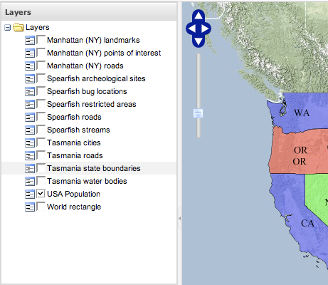
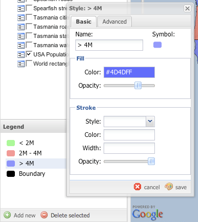
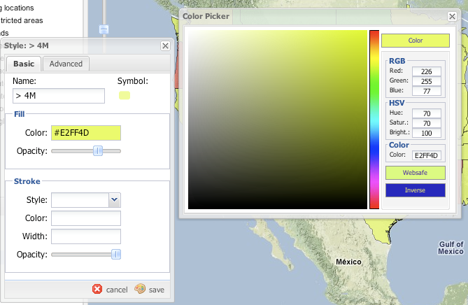
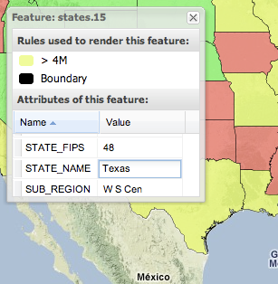

GeoExt Styler¶
Installation¶
- Download the REST plugin for your version of GeoServer from the download page .
- Unzip the archive into the WEB-INF/lib directory of the GeoServer installation.
- Restart GeoServer
- Download the GeoExt Styler extension from here (it says 1.7.3 but the version number doesn’t matter. Soon there will be an updated release)
- Unzip the archive into the www/ directory of the GeoServer data directory.
Usage¶
1. Visit http://localhost:8080/geoserver/www/styler/index.html 2. Use the “Layers” panel to select a layer to style.

In the “Legend” panel select a rule by clicking on it.
Change the color by clicking in the color box.
Click on a feature to view information about its attributes and which rules applied to it.

Previous: Cross-layer filtering
Next: Web Processing Service